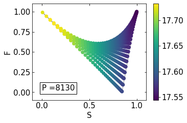

<section>
	<div class="container">
		<h3>Thermal Sunyaev-Zeldovich effect angular distribution</h3>

		<h4>Sunyaev-Zeldovich effect full bispectrum</h4>
		<p><span class="image right"></span>
			The thermal Sunyaev-Zeldovich (tSZ) effect is mostly sourced by galaxy clusters, and as such it is a very
			non-Gaussian field. Thus, high order statistics carry significant information which is not contained in the
			power spectrum. We performed a joint Fisher analysis of the tSZ power spectrum and bispectrum to verify how
			much the full bispectrum can contribute to improve parameter constraints.
			Despite being a Fisher forecast, our analysis is quite sophisticated, as we include the complete power
			spectrum and bispectrum (auto- and cross-) covariance, we consider a multi-component foreground scenario and
			model the effects of component separation, and we consider an extended set of both cosmological and
			intra-cluster medium parameters.
			Despite these effects that we account for in the modelling, the tSZ bispectrum is very efficient at breaking
			parameter degeneracies, making it able to produce even stronger cosmological constraints than the tSZ power
			spectrum.<br>
			<b>Reference:</b><br>
			AR, M. Rizzato, S. Radinović, et al., <i>Breaking degeneracies with the Sunyaev-Zeldovich full
				bispectrum</i>, JCAP 06 (2021) 026, <a href="https://arxiv.org/abs/2008.12947"> [arXiv:2008.12947] </a>
		</p>

	</div>
</section>